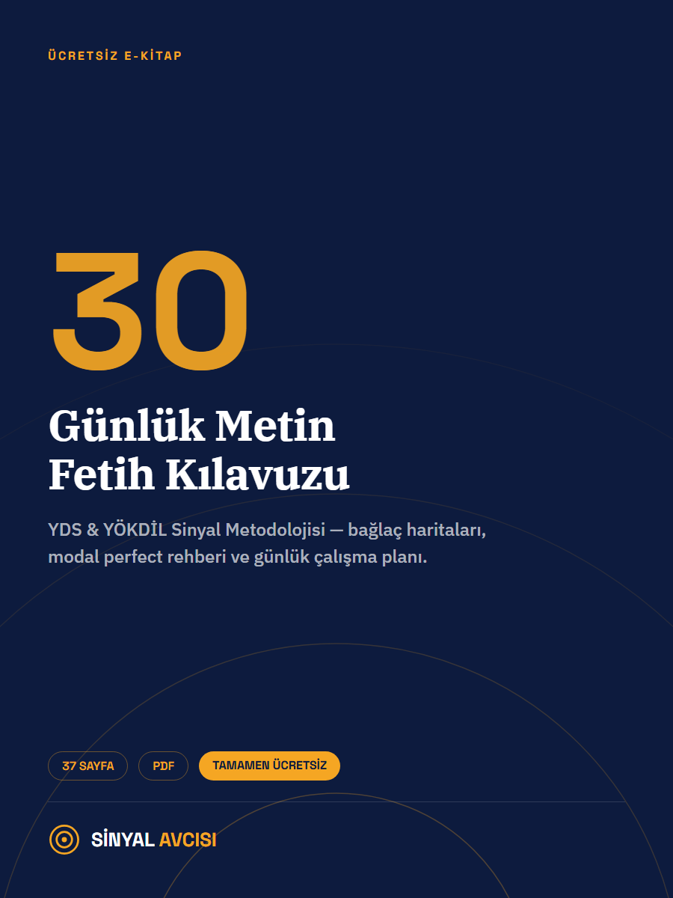

5 kısa soru çöz; seviyeni, zayıf noktanı ve sana özel bugünkü görevini gör. Kayıt yok, kredi kartı yok.
37 sayfalık PDF rehber. Sinyal metodolojisinin tüm adımları, bağlaç haritaları, modal perfect rehberi ve günlük çalışma planı.

Çoğu AI "doğru cevap B'dir" der. KLOD neden yanlış düşündüğünü bulur ve oradan öğretir.
19 YDS/YÖKDİL gramer konusu — otobüste, yürüyüşte, yatmadan önce.
Aşağıdaki "Bugün" kartındaki göreve başla. Kayıt gerekmez — ilerlemen bu cihazda saklanır.
Her harf neden farklı okunur? Renk kodlu analiz ve sesli örneklerle öğren.
YDS/YÖKDİL paragraf sorularını çözmek için 10 kanıtlanmış teknik. Her kartı aç, adım adım uygula, ustalaş.
Aralıklı tekrar (spaced repetition) sistemiyle YDS/YÖKDİL'de sık çıkan kelimeleri kalıcı hafızana kaydet.
İngilizce bir paragraf yapıştır — sinyal kelimeleri, referans zamirleri, negatif ifadeler ve ana fikir cümlesi otomatik olarak renklendirilip etiketlensin.
YDS/YÖKDİL sorusunu yapıştır — sistem soru tipini tespit edip hangi tekniği kullanman gerektiğini, adım adım uygulamayı ve dikkat edilecek tuzakları göstersin.
3 özgün İngilizce paragraf, 15 soru, 45 dakika — gerçek YDS deneyimine en yakın pratik.
Her gün otomatik değişen kısa bir antrenman: günün tekniği, günün 5 kelimesi ve günün mini paragrafı. 3'ünü de tamamla, rozetini kazan!
YDS ve YÖKDİL'de metinlerin büyük bölümü akademik yazıdır. Akademik dilde özne gizlenir, eylem öne çıkar. Bu yüzden Passive her metin sorusunda karşına çıkar.
Bu iki parça birlikte görünüyorsa → Passive. Hepsi bu.
Seçeneklerde hem will be open hem will be opened varsa → Passive istiyorsa her zaman V3.
The report _____ by the committee yesterday. Boşluğa ne gelir?
The contract _____ by the CEO tomorrow morning.
Boşluk doldurma sorularında çoğu öğrenci kuralları tek tek hatırlamaya çalışıp zaman kaybeder. BEBEK sistemi 5 harfte, 20 saniyede doğru şıkka götürür: Bak, Etiketle, Böl, Ele, Karar.
İlk adım çok basit: boşluktan HEMEN SONRA gelen kısma bak. Tam bir cümle mi (özne + fiil), yoksa sadece bir isim ya da -ing mi?
İkinci adım: boşluğun HANGİ KATEGORİDE olduğunu etiketle. Sinyal kelimeler 5 ana gruba ayrılır.
🧭 Genişletilmiş tetikleyici tablosunu gör: Trigger Sistemi'ni aç →
Üçüncü adım: cümleyi bağlaçtan/boşluktan iki parçaya böl. Sol taraf bir SEBEP, bir ZITLIK ya da bir AMAÇ mı anlatıyor? Sağ taraf bu sebebin SONUCU mu, yoksa aynı fikrin beklenmedik DEVAMI mı?
Dördüncü adım: yanlış şıkları 3 "bıçakla" ele. Her bıçak bir şıkkı devre dışı bırakır.
Beşinci ve son adım: 3 bıçaktan sağ çıkan TEK şık kalmalı. Onu işaretle, geri dönüp sorgulama.
Bazı fiiller kendinden sonra hem -ing hem to + fiil alabilir — ama anlam TAMAMEN değişir. YDS/YÖKDİL bu farkı ölçmeyi çok sever. Bu derste 3 fiili (stop, remember, try) çözeceğiz.
stop + V-ing: yapılan bir eylemi BIRAKMAK. stop + to V: bir eylemi durup BAŞKA bir şey YAPMAK için (asıl amaç to-fiildeki eylem).
remember + V-ing: geçmişte YAPTIĞIN bir şeyi HATIRLAMAK. remember + to V: yapman gereken bir görevi UNUTMAMAK (henüz yapılmadı).
try + V-ing: bir şeyi bir ÇÖZÜM/deneme olarak yapmak (kolay, sonucu görmek için). try + to V: ZOR bir şeyi başarmaya ÇALIŞMAK (çaba, mücadele var).
| Fiil | + V-ing | + to V |
|---|---|---|
| stop | bırakmak | durup (başka bir şey) yapmak |
| remember | geçmişi hatırlamak | görevi unutmamak |
| try | dene / test et | zor bir şeye çabala |
1) She stopped _____ (smoke) after the doctor's warning.
2) Don't forget to _____ (lock) the door before you leave.
3) He tried _____ (open) the jar but couldn't.
22 sık karışan gramer kuralı, tek bakışta özet. Kartın üzerine tıkla, formülü ve örneği gör.
Şablonu görürsen anlamasan bile doğru cümleyi seçersin.
5 cümlelik bir paragrafın rolleri şöyle dağılır — her ÖSYM metninde bu iskeleti ara:
1) (I) Working long hours reduces productivity. (II) _____, short breaks improve focus.
2) (I) Pollution increased. (II) _____, the government introduced new regulations.
Boşluktan sonraki parçada fiil var mı, yok mu? Bu tek soru Clause mu Noun Phrase mi olduğunu belirler.
Zaman, bağlaç ve özel tetikleyicilerin tam tablosu — sonra 10 örnekte C (cümle) / N (isim) / Özel seçimini pratik yap.
Hangi fiilin hangi çetede olduğunu bilirsen soru biter.
Bu ders sıkça gerund/infinitive sorularıyla birlikte çıkar — zaman ipuçlarını da tanı:
1) He stopped ____ (smoke) after the doctor's warning.
2) She decided ____ (study) abroad.
3) He tried ____ (open) the jar, but it was too heavy.
Bunu çözersen cümleyi iskeletine indirirsin.
1) "The car _____ last week was found by the police."
2) "The woman _____ at the door is my aunt."
3) "_____ the heavy traffic, she arrived on time."
3 adımda doğru şıkkı avla: ton → zıt ele → collocation.
Boşluğun etrafına bak. Pozitif mi negatif mi?
Bazı kelimeler hep birlikte gelir:
🔍 Bilinmediğin kelimeyle karşılaşınca ne yapmalı? 4 Adımlı Bağlam Stratejisi'ni dene →
1) "The new policy aims to _____ the risks associated with climate change."
2) "The reform was expensive; _____, it significantly improved education quality."
3) "Scientists _____ a comprehensive study on air pollution last year."
Bilmediğin kelimeyle karşılaşınca 10 saniyede çöz: TÜR → TON → KÖK → İPUCU.
YDS/YÖKDİL'de en sık çıkan akademik kelime ve collocation'lar. Karta tıkla, çevir; öğrendiysen işaretle.
3 Nokta Tekniği ile soruyu bul, cevabı avla.
1) The word 'it' in "Scientists discovered a new element; it was named after Marie Curie." refers to:
2) Which question type asks you to read between the lines?
3) "Exercise has many benefits. _____, it can cause injury if done incorrectly." Boşluğa ne gelir?
YDS'nin altın tuzağı: 4 modal, 4 Türkçe etiket — hepsini 10 saniyede ayırt et.
1) "The keys are missing. He _____ them at the office."
2) "She didn't pass the exam. She _____ harder."
3) "The report _____ before the meeting, but nobody did it."
2 teknik öğren: Skimming + Scanning. Sonra Çift Turlu çöz, baskıyı sıfırla.
1) Skimming tekniğinde ilk ne okunur?
2) Scanning tekniğinde ne aranır?
3) Çift Turlu Çözüm'de 1. turda ne yapılır?
Bu terimleri tanırsan metni anlamadan bile doğru şıkkı seçersin.
1) The study of how people learn falls under which branch?
2) Jack visited the town every summer. Which is TRUE?
3) Researchers _____ a series of experiments.
Cebinde para olmasa da — buradaki her şey sana ait.
| Özellik | Sinyal Avcısı |
|---|---|
| 💰 Ücret | TAMAMEN ÜCRETSİZ |
| Sinyal metodolojisi | ✅ |
| Türkçe AI öğretmen (KLOD) | ✅ |
| Alan bazlı metinler (Hukuk, Sağlık…) | ✅ |
| Sesli kurs & podcast | ✅ |
| Spaced repetition kelime sistemi | ✅ |
| Adaptif soru motoru | ✅ |
| İmkânsız öğrencilere destek | ❤️ |
Türkiye'de binlerce akademisyen, öğretmen, doktor, avukat — YDS ve YÖKDİL için 5 TL'si bile olmadığı için hayalinden vazgeçiyor. Bu doğru değil. Sinyal Avcısı bu yüzden burada. Bu yüzden ücretsiz. Bu yüzden her zaman ücretsiz kalacak.
Platform zaten ücretsiz ve açık. Hesap açarsan streak'in, XP'n ve hata defterin kaybolmaz.
Hesabın oluşturuldu ve her şey aktif!
Sürekli büyüyen soru bankası, KLOD, ses kursu — hepsi seni bekliyor.
Başka platformlara para vermeden önce şunu bil:
Buradaki her şey
tek kuruş ödemeden senin.
Yorumun, ekibimiz kontrol ettikten sonra ana sayfada yayınlanır.
Yorum bırakmak için önce giriş yapmalısın.
37 sayfalık ücretsiz e-kitabı al — bağlaç haritaları, modal perfect rehberi ve 30 günlük çalışma planı.
Spam yok · İstediğinde çık